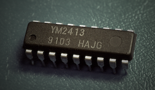

|
MD_YM2413 Library 1.0
Library for Yahama YM2413 sound synthesizer
|
|
MD_YM2413 Library 1.0
Library for Yahama YM2413 sound synthesizer
|

The YM2413, OPLL, is a cost-reduced FM synthesis sound chip manufactured by Yamaha Corporation and based on their YM3812 (OPL2).
The simplifications mean that the YM2413 can only play one user-defined instrument at a time, with an additional 15 read-only hard-coded instrument profiles available. The IC can operate as 9 channels of instruments or 6 channels with melodic instruments and 5 with hard-coded percussion instruments.
Its main historical application was the generation of music and sound effects in microprocessor systems. It was extensively used in early game consoles, arcade games, home computers and low-cost synthesizer keyboards.
This library implements functions that manage the sound and noise generation interface to the YM2413 IC through a clean API encapsulating the basic functionality provided by the hardware.